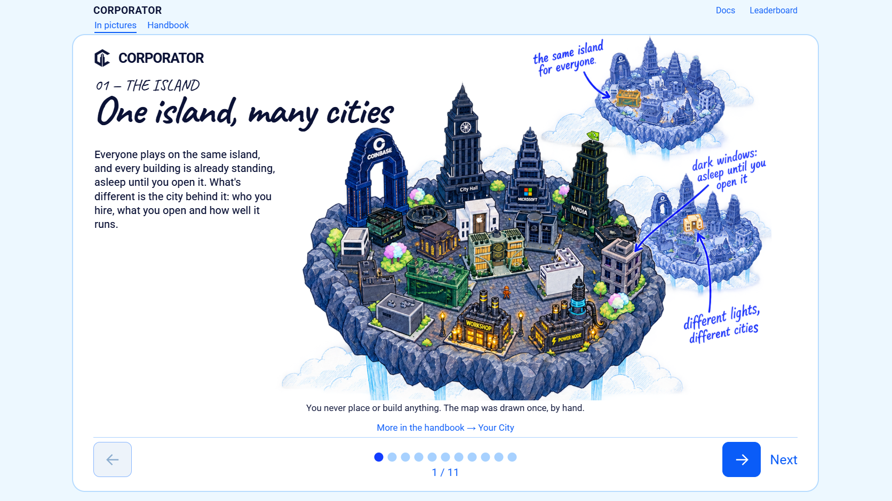
01 — One island, many cities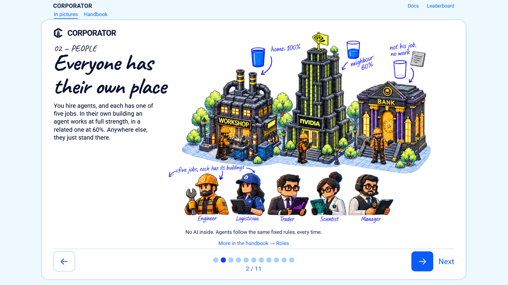
02 — Everyone has their own place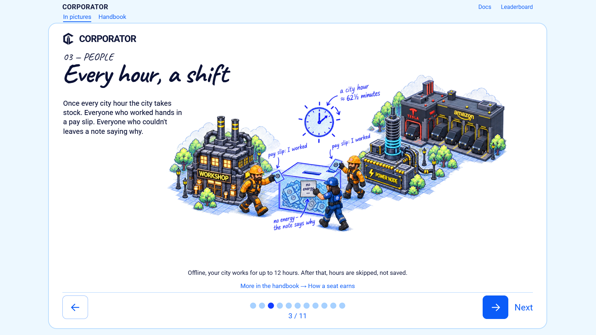
03 — Every hour, a shift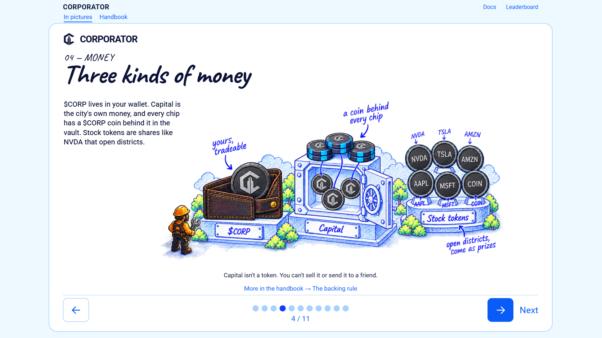
04 — Three kinds of money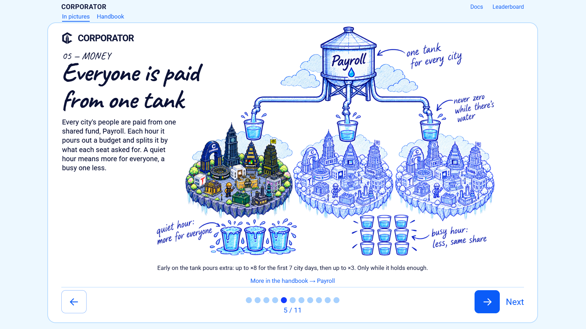
05 — Everyone is paid from one tank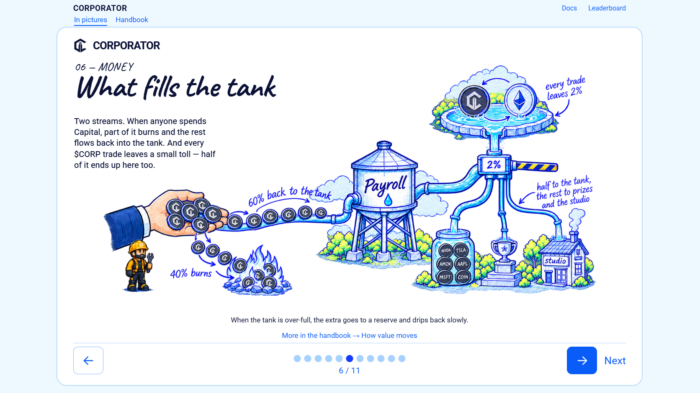
06 — What fills the tank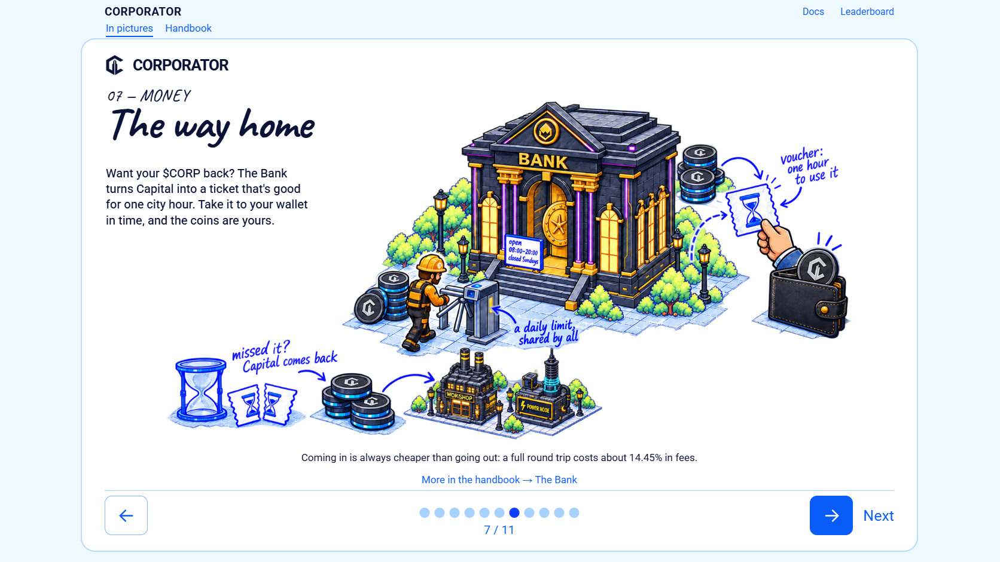
07 — The way home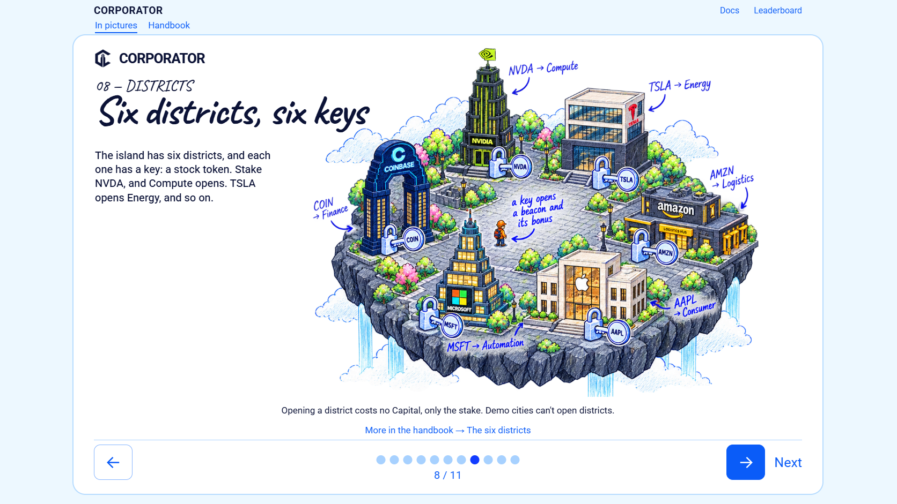
08 — Six districts, six keys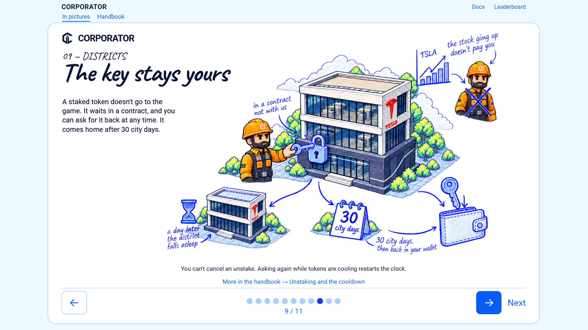
09 — The key stays yours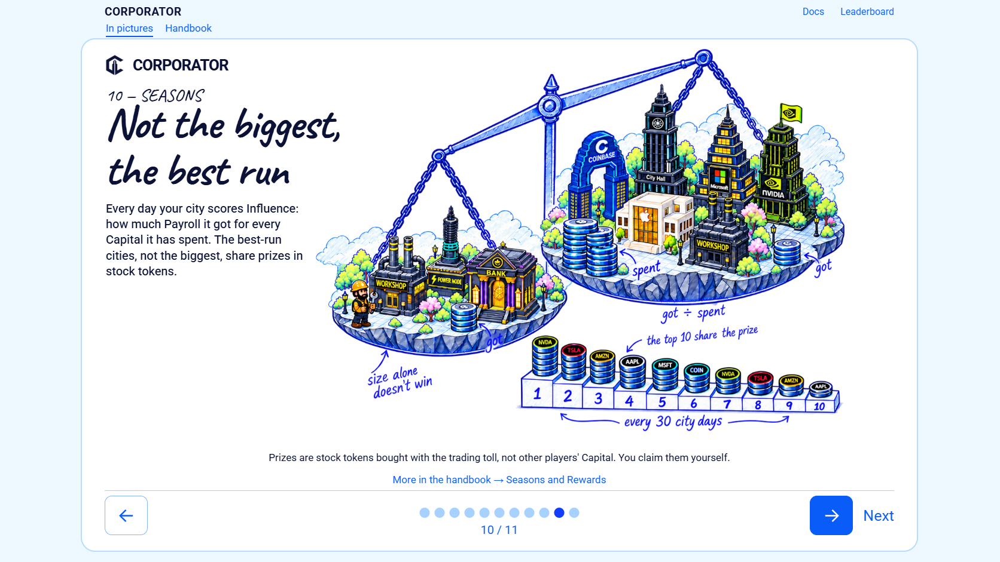
10 — Not the biggest, the best run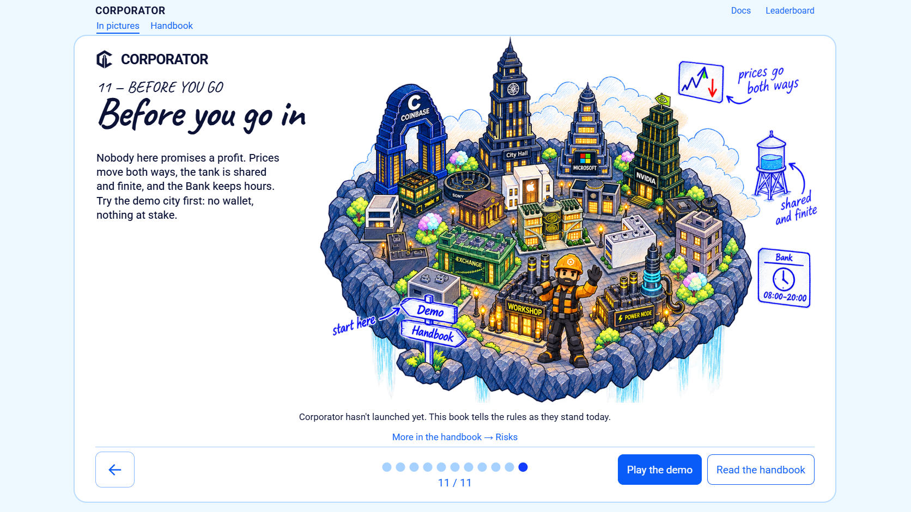
11 — Before you go in